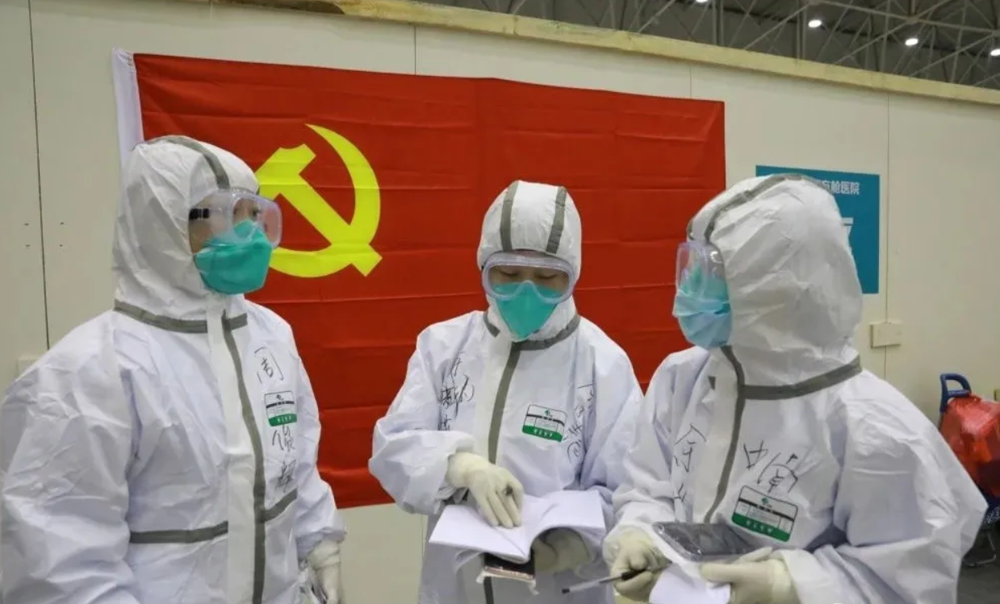

当前
国内疫情防控取得
重要阶段性胜利
这来之不易的战果
源自我们每个人的努力
回顾3个月来的抗疫斗争
让我们收获了很多
人民为本、生命至上的执政理念愈加彰显
一方有难、八方支援的民族精神全面点燃
顾全大局、共担风雨的家国情怀热浪空前
“四个自信”成为每名中国人的深切体验
“四个意识”比任何时候更让人铭刻心间
疫情面前，中国在做，世界在看
人民的守望相助引多国围观
强大的动员能力值得点赞
中国特色社会主义制度
体现了巨大优越性
中国人民有力量，不惧怕大灾大难
中国经济有韧性，经得起风浪考验
中国政府有担当，从不会袖手旁观
今天的神州，已是峰回路转
崛起的中国，值得仰头来看
我们经受了一场治理水平的实践检验
中央决心定，上下一盘棋
没有打不赢的战役
没有攻不破的难关
我们谱写了一首向死而生的决胜诗篇
大难临头更果敢
笃定逆行皆淡然
胜局已成定局，胜利不可逆转
我们实现了一次思想深处的精神涅槃
像抗洪精神、抗震精神一样
抗疫精神恸地感天
让冰雪消融、把人心捂暖
梅香自寒，何惧风险
多难兴邦，何况大难
有理由相信
我们必将最终打赢这场疫情防控阻击战